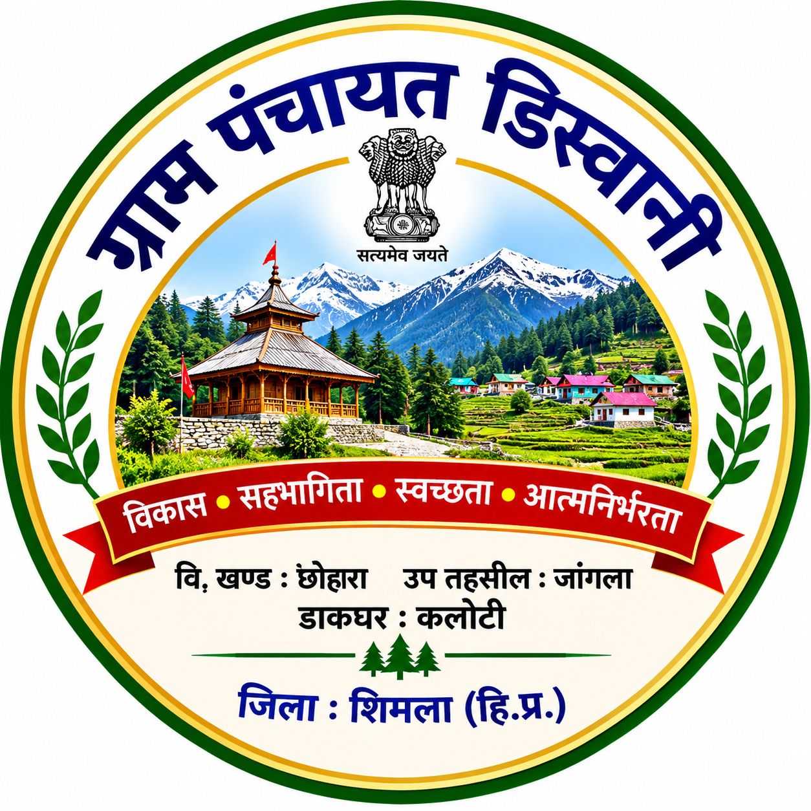

विकास खण्ड छोहारा, जिला शिमला, हिमाचल प्रदेश
सशक्त पंचायत, समृद्ध गांव — हमारा संकल्प
ग्राम पंचायत डिस्वानी की आधिकारिक सूचना एवं सेवा वेबसाइट
ग्राम पंचायत डिस्वानी, विकास खण्ड छोहारा, जिला शिमला, हिमाचल प्रदेश में स्थित है।
पंचायत का उद्देश्य गांव का विकास, जनसमस्याओं का समाधान तथा सरकारी योजनाओं का लाभ प्रत्येक पात्र परिवार तक पहुँचाना है।
प्रधान: श्री बाबू राम
ग्राम पंचायत: डिस्वानी
पता: VPO कलोटी, उप तहसील जांगला, जिला शिमला
सड़क, रास्ते, नालियां, पेयजल, सामुदायिक भवन, स्ट्रीट लाइट एवं अन्य विकास कार्य।
विकास कार्यों की जानकारी समय-समय पर यहाँ प्रकाशित की जाएगी।
पंचायत के माध्यम से संचालित सरकारी योजनाओं एवं पात्रता की जानकारी यहाँ उपलब्ध करवाई जाएगी।
ग्राम सभा की बैठक, आवश्यक सूचनाएँ एवं पंचायत के महत्वपूर्ण निर्णय यहाँ प्रकाशित किए जाएँगे।
ग्राम पंचायत: डिस्वानी
डाकघर: कलोटी
उप तहसील: जांगला
जिला: शिमला, हिमाचल प्रदेश